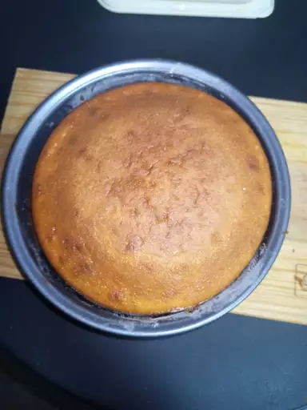

Home
Sponge Cake Recipe


Description
There's nothing quite like a classic sponge cake—light, fluffy, and perfectly golden.
It's the kind of bake that never goes out of style, whether you're layering it with jam and cream for a Victoria sponge or keeping it simple with a dusting of icing sugar.
The best part? It's surprisingly easy to make, with just a few basic ingredients you probably already have in your kitchen.
If you're new to baking or just want something quick and satisfying, this sponge cake is a great place to start. Let's get whisking!
Ingredients
- 4 large eggs
- 2 cups white sugar
- 2 cups all-purpose flour
- 2 teaspoons baking powder
- ½ teaspoon salt
- 1 cup milk
- ¼ cup unsalted butter, cut into pieces
- 2 teaspoons vanilla extract
Steps
- Gather all your ingredients.
- Preheat the oven to 350 degrees F (175 degrees C). Grease and flour a 9x13-inch baking pan.
- Beat eggs in a stand mixer fitted with the whisk attachment on high speed until thick and lemon-colored, about 3 minutes. Gradually add sugar, beating until mixture is thick, about 5 minutes. Fold flour, baking powder, and salt into the batter by hand.
- Microwave milk in a microwave-safe bowl until it begins to bubble, about 1 minute. Add butter and stir until melted. Stir in vanilla.
- Pour hot milk mixture into the batter; blend on low speed until well combined and smooth. Pour into the prepared pan.
- Bake in the preheated oven until a toothpick inserted in the center comes out clean, 25 to 30 minutes.
- Enjoy!